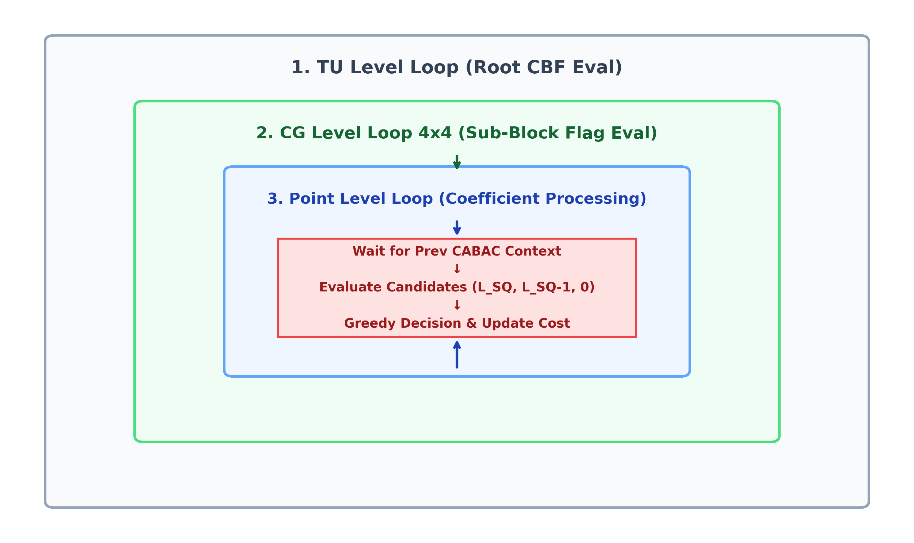

VVC RDOQ 硬件架构设计 Dashboard
Hardware Architecture & Pipelining
1. RDOQ 算法全景解析 (Algorithm Panorama)
在深入硬件优化前，必须厘清 RDOQ 在 C-Model 中的算法本质。RDOQ 并非盲目尝试，而是一场从宏观扫描到微观计算，再到层级截断的精密“外科手术”。
1.1 战场全貌与宏观扫描：能量分布与嵌套执行流程
当一个 Transform Unit (TU) 经过 DCT 变换后，其能量分布具有极强的规律性：

- 低频区（左上角）：能量高度集中，系数值极大。这里的系数对画面质量起决定性作用，几乎不可能被 RDOQ 清零。
- 高频区（右下角）：能量稀疏，散落着大量幅值极小（量化后
Level = 1或2）的系数。
为何优先处理此类系数？因为在 CABAC 熵编码中，编码一个孤立的
Level=1 系数，需要消耗极高的语法开销（需要编码 sig_coeff_flag=1、坐标位置、符号位等）。它们消耗了不成比例的巨量 bits，但对画质的贡献却微乎其微。RDOQ 的核心收益，正是通过评估代价，将这些“性价比极低”的边缘系数强制量化为 0，从而换取码率的显著降低。
锁定靶点后的宏观扫描路径 (Nested Scan)
明确了高频系数是优化靶点后，系统需要一套严格的扫描顺序来遍历它们。微观的系数代价值比较并非毫无章法地乱序执行。在一个完整的 TU 内部，RDOQ 遵循极其严格的嵌套扫描 (Nested Scan) 流程。很多初学者会疑惑：“既然是 4x4 处理，为什么又说是单点串行扫描？” 让我们通过下面的动态推演一探究竟：
扫描状态监控 (TU = 8x8)
当前坐标 (x,y): -
当前所在系数组: -
当前处理层级: 等待开始
- 系数级：严格串行的单点逆向扫描 (Point-by-Point)
虽然 TU 被划分为了 4x4 的块 (CG)，但在硬件微观执行层面，依然是一个坐标一个坐标 (单点) 去串行处理的。从末尾非零系数所在的 CG 开始，沿着对角线方向逆向推进。例如处理(4,5)后处理(5,4)。它们绝对不能跨点并行处理，因为后一个系数的 CABAC 概率模型，强依赖于前一个系数的最终量化结果。深度解析：这道阻止并行的“数据冒险 (Data Hazard)”墙是如何产生的？在计算当前坐标
(x,y)的上下文增量ctxInc时，系统需要构建一个周边相邻掩码patternSigCtx。这个掩码强依赖于它的右侧邻居 (x+1,y) 和下方邻居 (x,y+1) 最终是否为非零系数。
- 时空交错：因为扫描顺序是“从右下到左上的逆向对角线”，这意味着右侧和下方的邻居在时间轴上必然先于当前系数被扫描。
- 致命的 RDOQ 反馈：RDOQ 的贪婪本质在于“试探与微雕”，它极有可能把原本初始量化不为 0 的右侧邻居，为了省码率而强制量化为 0 (Level=0)。
- 并行悖论：如果硬件设计想把
(x,y)和(x+1,y)放入同一个时钟周期内流水线并行计算，那么在算(x,y)的 CABAC 码率代价值时，(x+1,y)的最终 RDOQ 判决结果还没出炉！硬件根本不知道patternSigCtx该不该包含这个邻居，从而导致查表的Fractional Bits Cost彻底跑飞。因此，必须老老实实等前一个系数的 RDOQ 彻底走完全流程，其最终状态固化后，才能推导下一个系数的 Context。这就是所谓“强依赖”的硬件灾难级来源！
- CG 级：4x4 块级阻断判决 (Sub-Block Flag)
当一个 4x4 CG 内部的 16 个系数全部单点处理完毕后，系统会整体暂停，进行一次块级宏观算账：“如果我把刚才这 16 个系数连同这个 4x4 块的标志位直接全部抹零，总体代价会不会更低？” 如果是，则触发coded_sub_block_flag = 0。 - TU 级：终极判决 (Root CBF)
当单点扫描最终抵达并处理完左上角的 DC 系数(0,0)，整个大 TU 扫描宣告结束。引擎最后评估一次将整个 TU 清零的代价，如果更低，则触发cbf = 0。
其实并不矛盾。“4x4”是管理的粒度（决定何时触发块级评估），而“单点”是执行的粒度（保证 CABAC 依赖的正确性）。 只有跑完完整的 系数级 → CG级 → TU级 三层循环后，RDOQ 流程才算真正“计算完毕”。
📊 宏观控制流：三层嵌套循环执行架构 (Nested Execution Flow)

1.2 微观手术：候选 LEVEL 的精准产生
对于选定的变换系数 Ctrans，RDOQ 不会遍历所有数字，而是基于普通标量量化 (SQ) 的结果进行局部试探：
- 首先执行普通量化：LSQ = round(Ctrans / Qstep)。
- 随后，RDOQ 引擎通常只会产生 2 到 3 个候选 Level 参与 PK：{ LSQ, LSQ-1, 0 }。
- 调整逻辑：它只会尝试将系数“减弱”或“抹零”，绝不会尝试“增强”（因为增强既增加误差又增加码率）。

假设我们有一个高频系数 Ctrans = 26，并且当前量化步长 Qstep = 10。
1. 基准量化： 26 / 10 = 2.6，四舍五入后得到基准
LSQ = 3。2. 产生候选： RDOQ 引擎会选定三个候选量化值参与代价比较：
Level = 3 (保持)、Level = 2 (减弱)、Level = 0 (强制量化为 0)。如果是像上图那样更极端的 Ctrans = 11，
LSQ = 1，那么候选就只有 Level = 1 和 Level = 0 了。正是由于这种收敛机制，庞大的搜索空间被转化为极简的“二选一”或“三选一”贪婪比对。
1.3 码率度量：从 CABAC 语法元素到 BinCost
在评估某个候选 Level 时，Cost = Distortion + Rate。其中畸变 (D) 很容易通过差值的平方求得，但码率 (R) 则需要极其精确的估算。

如上图所示，C-Model 的 rdoq_coeff_est() 函数会模拟真实的 CABAC 状态机更新，但不做实际的区间划分，而是查表获取理论上的“分数比特 (Fractional Bits)”。总比特消耗的计算公式为：
核心解密：上下文分数比特 (Fractional Bits) 与 128 级熵值查表 (Entropy LUT) 的底层逻辑
在 CABAC 中，每个上下文模型 (Context Model) 都在不断追踪特定语法的概率状态，表现为一个 0~63 的整数状态索引 pStateIdx（代表 LPS 出现的概率），再加上 1 位的 valMPS 标志。两者组合构成了 128 个可能的上下文状态。
在查
Entropy_LUT 之前，C-Model 必须先从一维的 Context_Array 中定位当前标志位专属的概率模型，从中提取出 pStateIdx 和 valMPS。为了满足硬件架构师对时序和状态机的精准控制需求，以下展示 CABAC 中最复杂的 ctxInc 动态增量计算与 Context_Array 初始化的数学级流向：
1. 动态增量 ctxInc 计算公式 (以 sig_coeff_flag 为例)
ctxInc = BaseOffset + LumaCGOffset + cnt;
- BaseOffset:
(log2BlockSize == 3) ? (scanIdx == SCAN_DIAG ? 9 : 15) : (textureType == TEXT_LUMA ? 21 : 12) - LumaCGOffset:
((textureType == TEXT_LUMA && ((posX>>2) + (posY>>2)) > 0) ? 3 : 0) - cnt (空间模板坍缩):
Int posXinSubset = posX & 3; Int posYinSubset = posY & 3; if(patternSigCtx == 0) cnt = (posXinSubset + posYinSubset <= 2) ? ((posXinSubset + posYinSubset == 0) ? 2 : 1) : 0; else if(patternSigCtx == 1) cnt = (posYinSubset <= 1) ? ((posYinSubset == 0) ? 2 : 1) : 0; else if(patternSigCtx == 2) cnt = (posXinSubset <= 1) ? ((posXinSubset == 0) ? 2 : 1) : 0; else cnt = 2;
假设在一个 8x8 (log2BlockSize=3) 的 Luma TU 中，我们逆向扫描到了坐标 (posX=5, posY=6)，且它所在周边模板中尚未编码任何非零系数 (即 patternSigCtx=0)。
2) LumaCGOffset = 3 (因为 5>>2=1, 6>>2=1，和为2>0，跳出了 DC 所在的左上角 CG)
3) posXinSubset = 5 & 3 = 1; posYinSubset = 6 & 3 = 2。
4) 因为 patternSigCtx=0，且 1+2=3 > 2，走 false 分支，所以 cnt = 0。
最终推导出的 ctxInc = 21 + 3 + 0 = 24！
硬件拿到这个 24 的偏移量后，加上该语法元素的全局基址，就能从 SRAM 的 Context_Array 中瞬间读出属于这个坐标的 8-bit 上下文概率状态 (m_ucState) 了。
2. Context_Array 内部节点 (m_ucState) 初始化公式
在每个 Slice 编码的伊始，必须利用规范表中的 initValue 与当前 QP 初始化上述一维阵列中的每一个 8-bit 节点：
slope = (initValue >> 4) * 5 - 45;offset = ((initValue & 15) << 3) - 16;initState = Clip3(1, 126, ((slope * QP) >> 4) + offset);valMPS = (initState >= 64) ? 1 : 0;pStateIdx = (initState >= 64) ? (initState - 64) : (63 - initState);m_ucState = (pStateIdx << 1) | valMPS;

在 RDOQ 执行期间，当需要计算编码某个 flag_val（0 或 1）的代价时，操作变得极其轻量化：只需执行一次位异或与数组寻址：
bit_cost = Entropy_LUT[ (pStateIdx << 1) | (flag_val ^ valMPS) ]
定点放大的魅力：通过预将浮点对数转化为定点整数（1 真实比特 = 32768 分数比特），原本复杂的概率计算被彻底降维。这就是为什么一个看似 1.2 bits 的代价，在硬件寄存器里其实是一个巨大的整数 39321！
假设当前评估的量化候选值是
Level = 3，那么在查表累加的过程中，它会经历如下关卡：
sig_coeff_flag = 1：根据该系数的 Context，查表得到分数比特 (例如 39321，约 1.2 bits)。greater1_flag = 1：因为 3 > 1，查表得到对应分数比特 (例如 26214，约 0.8 bits)。greater2_flag = 1：因为 3 > 2，查表得到对应分数比特 (例如 29491，约 0.9 bits)。sign_flag = 1 (或0)：符号位走 Bypass 模式（等概率0.5），固定消耗 1 真实比特（即硬编码的 32768 分数比特）。level_rem = 0：剩余绝对值3 - 3 = 0，使用 Golomb-Rice 编码，消耗若干比特。
Level = 3 时庞大的 cabac_bits！
最终，这些比特将通过拉格朗日乘子 λ 映射为整型 bincost，带入到微观代价值比较公式中：


2. 收益分布与取舍策略 (RDOQ Pruning Strategy)
RDOQ 作为压缩率“微雕”工具，收益高度集中于边缘高频系数。工业界在架构层面必须做出极端的收益/吞吐权衡。
强制关闭大块（CU16/CU32/CU8）的 RDOQ 以满足时序吞吐限制，死保 CU4/TU4 的 RDOQ (wf4)。仅牺牲约 0.5% 的 BD-Rate，换取流水线不会因为长周期状态机陷入瘫痪。
自然语言算法步骤 (Algorithm Steps)
- 尺寸侦测: 控制逻辑从上游截获当前流入 TU/CU 的像素尺寸元数据。
- 大块旁路剔除: 若检测到 Size > 4x4 (如 8x8、16x16)，直接封锁 RDOQ 硬件入口，迫使数据流入极简的普通标量量化 (SQ) 模块，迅速输出残差。
- 精英放行: 若检测到 Size == 4x4，则判定为高频收益敏感区，立刻拉高使能信号，将数据与 Context 喂入全量 RDOQ 引擎。
- 高频提纯: 引擎针对这些 4x4 精英块进行深度 Cost 寻优，最终压榨出极限的 Bincost 并输出纯净的高频残差。
3. 帧内环路死锁破解 (Intra Feedback Loop Bypass)
在 wf4 模块中，吞吐目标为 1 pix/clk（即每 16 拍处理一个 4x4 块）。但 RDOQ 会引入至少 8 拍延迟，使得总体重构反馈链路长达 24 拍，远超 16 拍预算。
为打破帧内相邻块的空间依赖链，强制预测重建像素跳过 RDOQ，走 Fast Loop 快速闭环。而 RDOQ 则在独立的 Slow Loop 中计算真实码流。
自然语言算法步骤 (Algorithm Steps)
- 源头分流: 像素在完成 DCT 与简单量化 (SQ) 之后，信号兵分两路，分别进入互不干涉的独立赛道。
- 快环抢跑 (Fast Loop): 第一路数据完全无视后续的 RDOQ，直接冲进反量化与 IDCT。仅仅 12 拍后即刻生成“快速预测重建像素”，并在第 13 拍立刻送给隔壁紧邻的块作为 Intra 空间预测源。死锁瞬间破解。
- 慢环细雕 (Slow Loop): 第二路数据则带着 SQ 的结果，不慌不忙地进入 RDOQ 核心计算池，耗时 20 拍以上计算出真实的最佳 Level 和 CABAC 码流估算。
- 合流决断: 最终写入比特流的数据完全采纳 Slow Loop 的高精结果；Fast Loop 的粗糙数据在发挥完“打破流水线气泡”的垫脚石作用后即被丢弃。

4. 静态上下文预生成 (Static Context Generation)
传统的 Trellis 网格寻优存在深度的系数间因果依赖。在硬件设计中，必须采用“局部独立近似”来替换“全局网格搜索”，为彻底打平流水线铺平道路。
自然语言算法步骤 (Algorithm Steps)
- 静态快照剥离: 抛弃原本动态更新上下文的做法，改为在第 1 拍利用初步 SQ 的结果，一次性暴力预生成 16 个系数的 CABAC Context 静态快照。这彻底切除了系数计算之间的时序依赖链。
- 搜索空间极简压缩: 舍弃了从 0 一直搜索到最优 Level 的传统庞大循环，硬件判定器强行锁定只有原始 Q 和减弱一档的 Q-1 两个候选目标参与角逐。
- 并行兵团展开: 点亮 16 个完全独立的物理计算单元 (Compute Unit)。这 16 个单元在同一时钟周期内，各自抱着自己的 Context 快照，疯狂且独立地计算自己所属系数的 Q Cost 和 Q-1 Cost。
- 决出局部霸主: 16 个单元内部的比较器瞬间各自决出 Cost 最小的优胜 Level。最终通过总线拼合，形成当前 4x4 块的伪全局最优解。
5. 终极吞吐利器：Two-Stage Fast RDOQ Pruning
为了满足严苛的 4K/8K 帧率，单纯在底层进行流水线化仍显不足，必须从宏观算法上源头把控，控制 RDOQ 模块的绝对启动频次。
前级采用标量量化 (SQ) 与 CABAC 初估，选出 Top-2 Best Candidates。仅将这 2 个 Candidate 扔入深度 RDOQ 流水线。牺牲极小 BD-Rate，削减 70% 的面积与时间开销，完美闭环 16 clk 预算！
自然语言算法步骤 (Algorithm Steps)
- 海选起跑线: 帧内预测模块筛选出的 16 个潜在最优模式 (Candidates) 汹涌涌入流水线。
- 廉价粗筛阵列: 对于这 16 个候选者，门禁系统强行禁止它们触碰昂贵的 RDOQ 引擎，而是让它们全部只经过廉价的普通 SQ 量化，并结合简易查表估算出一个极其粗糙的 Cost。
- 末位残酷淘汰: 硬件冒泡排序树接收这 16 个粗糙 Cost 并进行火速排序，当场无情抹杀排名靠后的 14 个选项，只留下金字塔尖的 Top-2 精英。
- 精英极深造: 此时，只有这历经千辛万苦幸存的 2 个 Elite Candidates，才被获准正式踏入极其吃面积与功耗的 4-Unit 深度 RDOQ 优化阵列。吞吐量从而被奇迹般地压制在了物理预算极限之内。

6. 亮色度分治策略 (Luma-Chroma RDOQ Bypass)
在实际硬件流水线中，针对亮色度采取非对称的量化策略，以追求极致的性价比与吞吐率。这是一种完全符合标准语法且 100% 保证编解码一致性（Mismatch Free）的经典工程权衡。
由于人眼对亮度细节远比色度敏感，RDOQ 带来的压缩收益绝大部分集中在 Luma (亮度) 分量。强迫 Chroma (色度) 旁路 RDOQ，仅执行基础的标量量化 (SQ)，可在几乎不影响整体 BD-Rate 的前提下，节省可观的计算周期与面积开销。
自然语言算法步骤 (Algorithm Steps)
- 分量侦测: 流水线控制端根据当前 TU 的颜色通道元数据，区分 Luma (Y) 与 Chroma (Cb/Cr)。
- 色度快速旁路 (Chroma Fast-Path): 若为色度通道，强制封锁 RDOQ 硬件入口使能，数据仅流过廉价的普通标量量化 (SQ) 模块，快速闭环并输出残差。
- 亮度深度精雕 (Luma RDOQ-Path): 若为亮度通道（且符合 4x4 等精英尺寸），则获准进入完整的 RDOQ 深度优化寻优阵列，以压榨极限的视觉与码流收益。